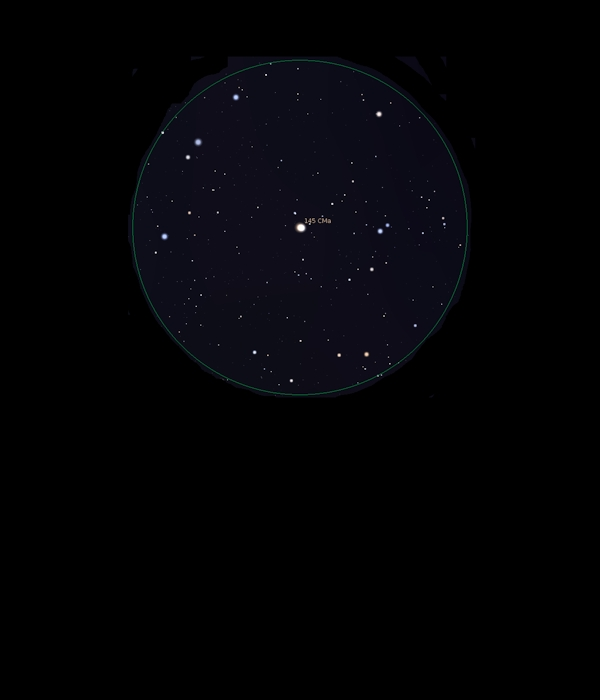

145 Canis Major
Double Star in Canis Major
Mags 4.80 and 5.95
HIP
35210
The Winter Albireo, Herschel 3945
26/01/17
Wow, what an amazing colour contrast this easily split wide
double star is
Know as The Winter Albireo after Albireo, the archetypal colourful
double
The primary, at Mag 4.80, is a beautiful dark golden orange
and it's companion, at Mag 5.95 is a deep bright blue
Made even better by the fact that they sit in a very sparse
FOV at all zooms so appear to be sitting on black, great!